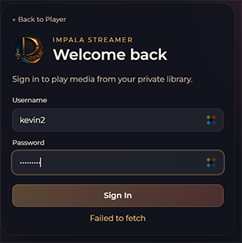
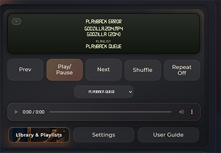
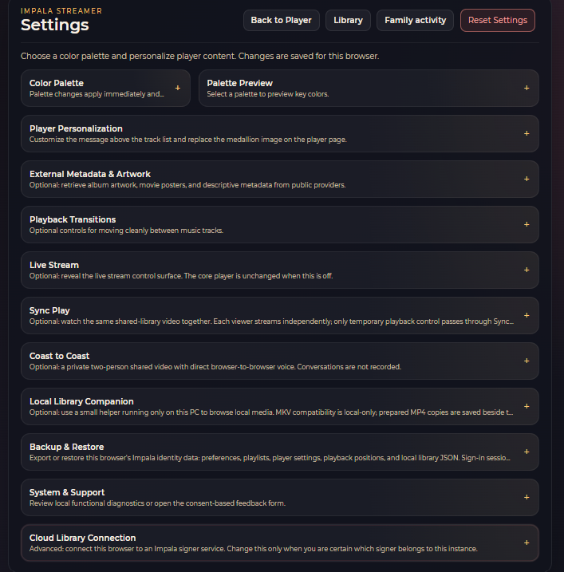
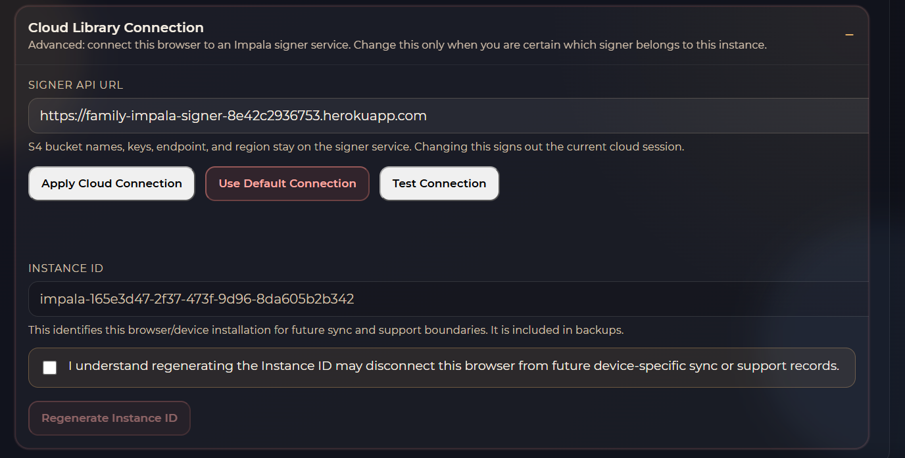
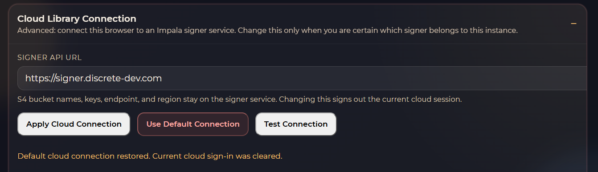
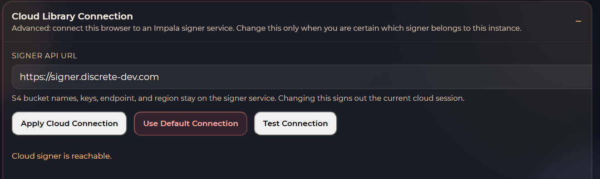
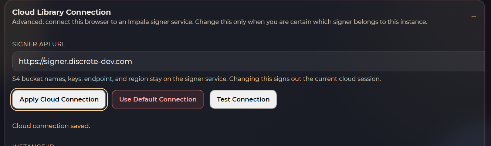

Changing your Cloud Signer
Learn how to change the cloud signer for your Impala Streamer setup.
1) What is the Cloud Signer?
When you use the cloud version of Impala Streamer, the Signer manages User Authentication, connection to other microservices, and indexing your cloud media for use.
2) Before you begin changing your Cloud Signer
Trouble signs of a wayward Signer
- Signer fails to authenticate users with error "Failed to Fetch".
- Microservices are not useable.
- Cloud media indexing fails or your cloud Library (Not your Local Library - see Impala Helper for that) stays offline.
Before you Leap, Look. (Very Important)
- Copy the current Signer location (URL) for reference. It is not recoverable after overwritten.
- Verify that the new Signer is properly set up, accessible, and has your user ID and Password.
- Do not try to use someone else's Signer, it will not work.
If you need a new Signer, contact Discrete Development using the Contact page.
3) Process to Change the Cloud Signer
Begin by accessing the Impala Streamer settings screen.
- Even though you are not propery signed in, you can access the Signer settings:
- Click the Back to Player link, then Select Settings.
- On the Settings screen, the section you want is at the bottom, "Cloud Library Connection".
- Do NOT change the Instance ID, this is exceptionally different.
- Changing the Impala Signer URL (This is where you make sure you have copies of the current SSigner URL for your records.)
- Click "Use Default Connection" This will pull your new signer URL from your instance codebase. IF that has not been updated, you can paste in your new Signer URL directly.
- Click "Test Connection" to verify the new URL is working correctly.
- Click "Apply Connection" to save the new settings.







Finished